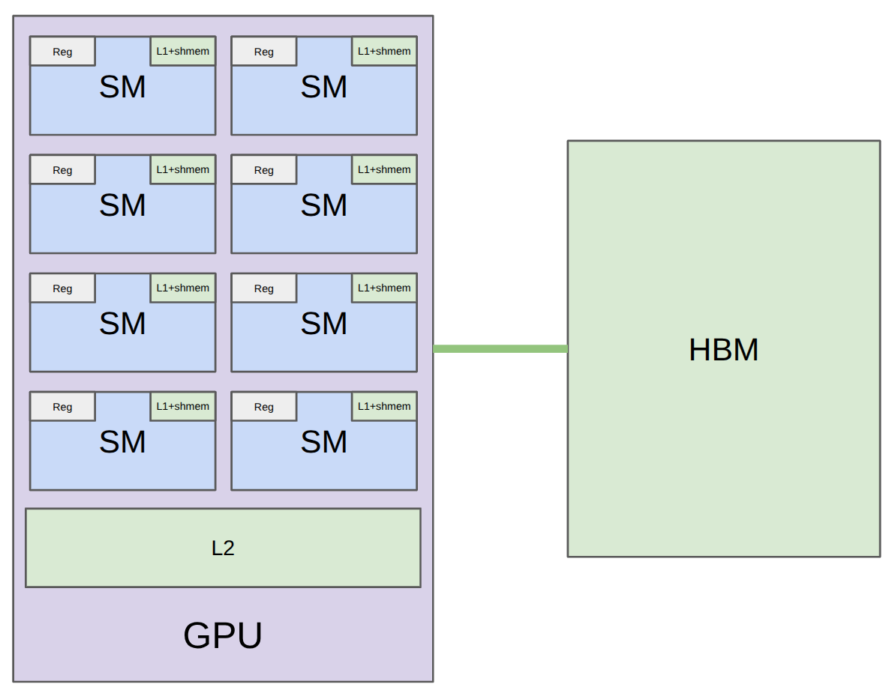
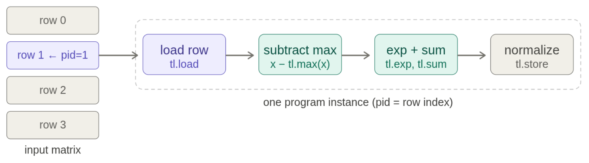
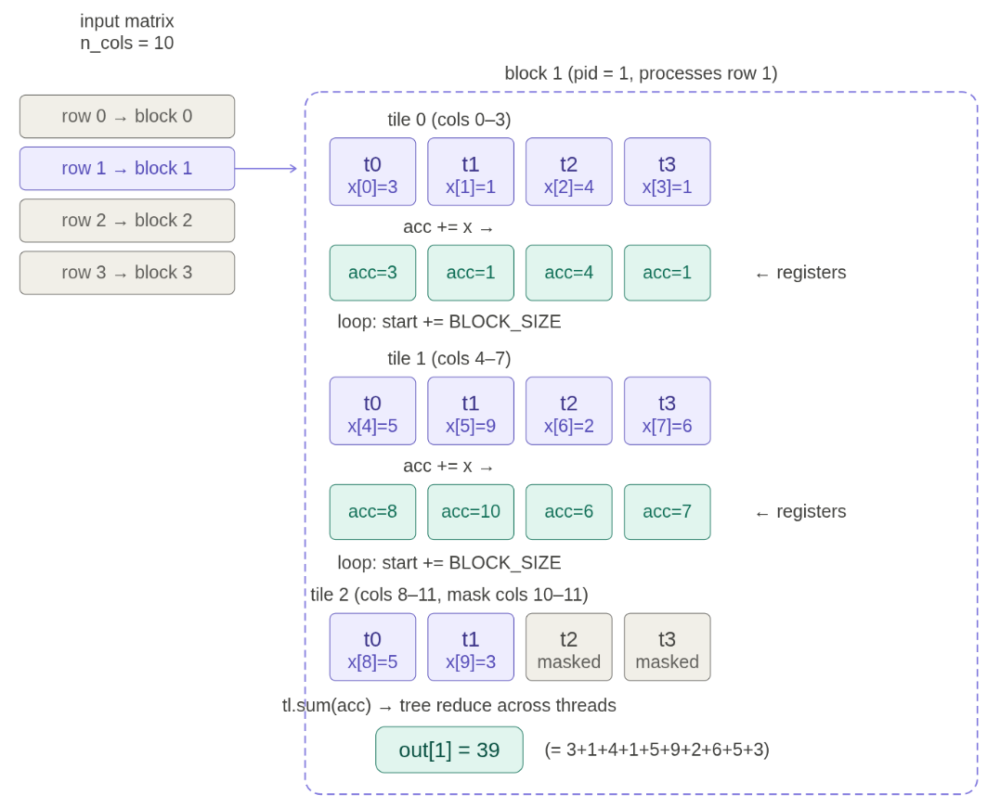
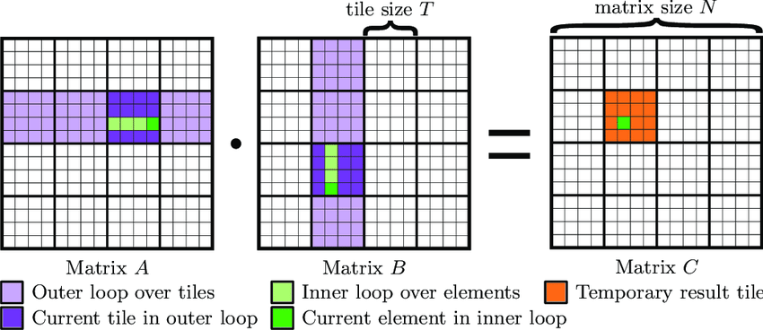

Last lecture: high-level overview of GPUs and performance
This lecture: benchmarking/profiling + writing kernels
Hardware

| Accelerator | A100 | H100 | B200 |
+------------------------------------+-----------+-----------+-----------+
| # SMs | 108 | 132 | 148 |
+------------------------------------+-----------+-----------+-----------+
| Register size (per SM) | 256 KB | 256 KB | 256 KB |
| L1 cache + shared memory (per SM) | 192 KB | 256 KB | 256 KB |
| L2 cache size | 40 MB | 50 MB | 96-126 MB |
| HBM size | 80 GB | 80 GB | 192 GB |
+------------------------------------+-----------+-----------+-----------+
| Register bandwidth | ~116 TB/s | ~401 TB/s | ~447 TB/s |
| L1 cache + shared memory bandwidth | ~19 TB/s | ~33 TB/s | ~19 TB/s |
| L2 cache bandwidth | ~5-8 TB/s | ~12 TB/s | ~9 TB/s |
| HBM bandwidth | 2 TB/s | 3.35 TB/s | 8 TB/s |
(B200s also have tensor memory (TMEM) for tensor cores (between registers and shared memory) that are invisible to programmer.)
Programming model
- Thread: executes code on a small part of the data
- Thread block or concurrent thread array (CTA): a group of threads
- Grid: collection of thread blocks
(H100s and B200s also have thread block clusters that enable distributed shared memory.)
Why thread blocks?
For elementwise operations (e.g., GeLU), threads are most natural: each thread processes one element.
- f(i) for i = 0, ..., N-1
However, for non-elementwise operations like softmax or matrix multiplication, threads need to communicate.
Reading/writing from HBM is slow, so use shared memory (local to SM).
Thread block: a collection of threads that access the same shared memory.
Consequently, a thread block is scheduled on one SM.
In Triton, think natively in terms of thread blocks (later).
Interaction between programming model and hardware
Programming model provides an abstraction of the hardware.
In principle, don't need to think about anything else (for correctness).
In practice, performance is very sensitive to the hardware, so need to understand it to obtain high performance.
Let's go over some considerations.
Warps:
- Within a thread block, threads are grouped into warps (32 threads per warp).
- Example: thread block has 64 threads => it has 2 warps.
| TTTTTTTTTTTTTTTTTTTTTTTTTTTTTTTT | TTTTTTTTTTTTTTTTTTTTTTTTTTTTTTTT |
- All threads within a warp must execute same instructions in lockstep on an SM.
- Control divergence: if different threads in a warp need to execute different instructions (if A, else B), must be done sequentially (bad)
| AAAAAAAAA....................... |
| .........BBBBBBBBBBBBBBBBBBBBBBB |
- SM runs multiple warps and switches between them (e.g., when one warp is blocked on HBM reads/writes) with zero cost.
(Warp) occupancy:
- Each thread can use between 0 and 255 registers.
- The more registers threads use, the fewer threads can be scheduled on an SM (low occupancy).
- Low occupancy isn't necessarily bad if each thread is doing more work.
- Example: thread coarsening (each thread processes multiple elements).
- Example: thread block has 64 threads, each using 160 registers, SM has 65536 registers
Bank conflicts (shared memory):
- Shared memory is divided into 32 banks, each 4 bytes wide.
B00 B01 B02 B03 B04 B05 B06 B07 B08 B09 B10 B11 B12 B13 B14 B15 B16 B17 B18 B19 B20 B21 B22 B23 B24 B25 B26 B27 B28 B29 B30 B31
... ... ... ... ... ... ... ... ... ... ... ... ... ... ... ... ... ... ... ... ... ... ... ... ... ... ... ... ... ... ... ...
... ... ... ... ... ... ... ... ... ... ... ... ... ... ... ... ... ... ... ... ... ... ... ... ... ... ... ... ... ... ... ...
... ... ... ... ... ... ... ... ... ... ... ... ... ... ... ... ... ... ... ... ... ... ... ... ... ... ... ... ... ... ... ...
- Each cycle, each bank can only be accessed by one thread (if not the same exact location).
- If multiple threads access the same bank, accesses serialized (bank conflict).
- Worst case example: matrix where each row spans all banks; 32 threads accessing first column results in 32-way bank conflict!
- Unavoidable: when doing matmul A @ B, access rows of A and columns of B
- Solution: swizzling rearranges shared memory (e.g., row xor col) to avoid bank conflicts
Memory coalescing (HBM):
- When the 32 threads in a warp access HBM, memory accesses combined into transactions of 128 bytes (cache lines).
M00 M01 M02 M03 M04 M05 M06 M07 M08 M09 M10 M11 M12 M13 M14 M15 M16 M17 M18 M19 M20 M21 M22 M23 M24 M25 M26 M27 M28 M29 M30 M31
M32 M33 M34 M35 M36 M37 M38 M39 M40 M41 M42 M43 M44 M45 M46 M47 M48 M49 M50 M51 M52 M53 M54 M55 M56 M57 M58 M59 M60 M61 M62 M63
- Best case: full coalescing, all threads access the same cache line (32 threads x 4 bytes = 128 bytes).
Block occupancy:
- Thread blocks scheduled onto SMs in waves.
- B200 has 148 SMs, if we launch 160 thread blocks, first wave has 148 blocks, second wave has 12 blocks.
- Wave quantization problem: last wave has fewer thread blocks, leaving some SMs idle (low block occupancy).
- Solution: make number of thread blocks divide # SMs.
Summary:
- Programming model: grid (HBM) -> thread block (shared memory) -> thread (registers)
- Details of hardware (warps, bank conflicts, memory coalescing, occupancy) determine performance
Recipe for success:
- Benchmark and profile your code
- Make changes
- Benchmark and profile your code again
Benchmarking measures the wall-clock time of performing some operation.
It only gives you end-to-end time, not where time is spent (profiling).
It is still useful for:
- comparing different implementations (which is faster?), and
- understanding how performance scales (e.g., with dimension).
You can use torch.utils.benchmark.
We will roll our own to make benchmarking more transparent.
Note: time is roughly constant when dimension is small, then cubic scaling.
While benchmarking looks at end-to-end time, profiling looks at where time is spent.
Independent of time, profiling also helps you understand what's going under the hood.
PyTorch has a built-in profiler.
In your assignment, you will use nsight to get more details.
add(dim=2048)
---------------------------------------------------------------------------------------------------- ------------ ------------ ------------ ------------ ------------ ------------ ------------ ------------ ------------ ------------
Name Self CPU % Self CPU CPU total % CPU total CPU time avg Self CUDA Self CUDA % CUDA total CUDA time avg # of Calls
---------------------------------------------------------------------------------------------------- ------------ ------------ ------------ ------------ ------------ ------------ ------------ ------------ ------------ ------------
void at::native::vectorized_elementwise_kernel<4, at::native::CUDAFunctor_add<float>, std::array<... 0.00% 0.000us 0.00% 0.000us 0.000us 4.960us 100.00% 4.960us 4.960us 1
Activity Buffer Request 97.35% 3.301ms 97.35% 3.301ms 3.301ms 0.000us 0.00% 0.000us 0.000us 1
cudaLaunchKernel 2.02% 68.587us 2.02% 68.587us 68.587us 0.000us 0.00% 0.000us 0.000us 1
cudaDeviceSynchronize 0.63% 21.269us 0.63% 21.269us 10.635us 0.000us 0.00% 0.000us 0.000us 2
---------------------------------------------------------------------------------------------------- ------------ ------------ ------------ ------------ ------------ ------------ ------------ ------------ ------------ ------------
Self CPU time total: 3.391ms
Self CUDA time total: 4.960us
matmul(dim=2048)
-------------------------------------------------------------------------------------------- ------------ ------------ ------------ ------------ ------------ ------------ ------------ ------------ ------------ ------------
Name Self CPU % Self CPU CPU total % CPU total CPU time avg Self CUDA Self CUDA % CUDA total CUDA time avg # of Calls
-------------------------------------------------------------------------------------------- ------------ ------------ ------------ ------------ ------------ ------------ ------------ ------------ ------------ ------------
cutlass3x_sm100_simt_sgemm_f32_f32_f32_f32_f32_64x64x16_1x1x1_3_nnn_align1_bias_f32_relu 0.00% 0.000us 0.00% 0.000us 0.000us 329.345us 100.00% 329.345us 329.345us 1
cuLaunchKernelEx 0.95% 27.515us 99.46% 2.867ms 2.867ms 0.000us 0.00% 0.000us 0.000us 1
Activity Buffer Request 98.50% 2.839ms 98.50% 2.839ms 2.839ms 0.000us 0.00% 0.000us 0.000us 1
cudaDeviceSynchronize 0.54% 15.626us 0.54% 15.626us 7.813us 0.000us 0.00% 0.000us 0.000us 2
-------------------------------------------------------------------------------------------- ------------ ------------ ------------ ------------ ------------ ------------ ------------ ------------ ------------ ------------
Self CPU time total: 2.883ms
Self CUDA time total: 329.345us
matmul(dim=128)
-------------------------------------------------------------------------------------------- ------------ ------------ ------------ ------------ ------------ ------------ ------------ ------------ ------------ ------------
Name Self CPU % Self CPU CPU total % CPU total CPU time avg Self CUDA Self CUDA % CUDA total CUDA time avg # of Calls
-------------------------------------------------------------------------------------------- ------------ ------------ ------------ ------------ ------------ ------------ ------------ ------------ ------------ ------------
cutlass3x_sm100_simt_sgemm_f32_f32_f32_f32_f32_32x32x16_1x1x1_3_nnn_align1_bias_f32_relu 0.00% 0.000us 0.00% 0.000us 0.000us 4.544us 100.00% 4.544us 4.544us 1
cuLaunchKernelEx 0.78% 32.090us 99.60% 4.118ms 4.118ms 0.000us 0.00% 0.000us 0.000us 1
Activity Buffer Request 98.83% 4.085ms 98.83% 4.085ms 4.085ms 0.000us 0.00% 0.000us 0.000us 1
cudaDeviceSynchronize 0.40% 16.357us 0.40% 16.357us 8.178us 0.000us 0.00% 0.000us 0.000us 2
-------------------------------------------------------------------------------------------- ------------ ------------ ------------ ------------ ------------ ------------ ------------ ------------ ------------ ------------
Self CPU time total: 4.134ms
Self CUDA time total: 4.544us
Observations:
- You can see which CUDA kernels are actually being called (the long names).
- Different CUDA kernels are invoked depending on the tensor dimensions.
Name of CUDA kernel tells us something about the implementation.
Example: cutlass3x_sm100_simt_sgemm_f32_f32_f32_f32_f32_64x64x16_1x1x1_3_nnn_align1_bi...
- cutlass: NVIDIA's CUDA library for linear algebra
- sm100: corresponds to the NVIDIA Blackwell architecture (B200)
- f32: float32
- 64x64x16: tile shape (more on this later)
Benchmark and profile your code!
Let's benchmark and profile the GeLU activation function.
The builtin and compiled versions are significantly faster!
To understand why, let's look at the profiler to see where time is being spent.
naive_gelu
---------------------------------------------------------------------------------------------------- ------------ ------------ ------------ ------------ ------------ ------------ ------------ ------------ ------------ ------------
Name Self CPU % Self CPU CPU total % CPU total CPU time avg Self CUDA Self CUDA % CUDA total CUDA time avg # of Calls
---------------------------------------------------------------------------------------------------- ------------ ------------ ------------ ------------ ------------ ------------ ------------ ------------ ------------ ------------
void at::native::vectorized_elementwise_kernel<4, at::native::BinaryFunctor<float, float, float, ... 0.00% 0.000us 0.00% 0.000us 0.000us 1.381ms 40.80% 1.381ms 460.394us 3
void at::native::vectorized_elementwise_kernel<4, at::native::AUnaryFunctor<float, float, float, ... 0.00% 0.000us 0.00% 0.000us 0.000us 926.431us 27.36% 926.431us 308.810us 3
void at::native::vectorized_elementwise_kernel<4, at::native::CUDAFunctor_add<float>, std::array<... 0.00% 0.000us 0.00% 0.000us 0.000us 460.735us 13.61% 460.735us 460.735us 1
void at::native::vectorized_elementwise_kernel<4, at::native::tanh_kernel_cuda(at::TensorIterator... 0.00% 0.000us 0.00% 0.000us 0.000us 308.927us 9.13% 308.927us 308.927us 1
void at::native::vectorized_elementwise_kernel<4, at::native::CUDAFunctorOnSelf_add<float>, std::... 0.00% 0.000us 0.00% 0.000us 0.000us 308.224us 9.10% 308.224us 308.224us 1
Activity Buffer Request 15.58% 775.108us 15.58% 775.108us 775.108us 0.000us 0.00% 0.000us 0.000us 1
cudaLaunchKernel 26.41% 1.314ms 26.41% 1.314ms 145.976us 0.000us 0.00% 0.000us 0.000us 9
cudaDeviceSynchronize 58.01% 2.886ms 58.01% 2.886ms 1.443ms 0.000us 0.00% 0.000us 0.000us 2
---------------------------------------------------------------------------------------------------- ------------ ------------ ------------ ------------ ------------ ------------ ------------ ------------ ------------ ------------
Self CPU time total: 4.975ms
Self CUDA time total: 3.385ms
builtin_gelu
---------------------------------------------------------------------------------------------------- ------------ ------------ ------------ ------------ ------------ ------------ ------------ ------------ ------------ ------------
Name Self CPU % Self CPU CPU total % CPU total CPU time avg Self CUDA Self CUDA % CUDA total CUDA time avg # of Calls
---------------------------------------------------------------------------------------------------- ------------ ------------ ------------ ------------ ------------ ------------ ------------ ------------ ------------ ------------
void at::native::vectorized_elementwise_kernel<4, at::native::GeluCUDAKernelImpl(at::TensorIterat... 0.00% 0.000us 0.00% 0.000us 0.000us 305.409us 100.00% 305.409us 305.409us 1
Activity Buffer Request 77.34% 1.002ms 77.34% 1.002ms 1.002ms 0.000us 0.00% 0.000us 0.000us 1
cudaLaunchKernel 21.88% 283.606us 21.88% 283.606us 283.606us 0.000us 0.00% 0.000us 0.000us 1
cudaDeviceSynchronize 0.78% 10.070us 0.78% 10.070us 5.035us 0.000us 0.00% 0.000us 0.000us 2
---------------------------------------------------------------------------------------------------- ------------ ------------ ------------ ------------ ------------ ------------ ------------ ------------ ------------ ------------
Self CPU time total: 1.296ms
Self CUDA time total: 305.409us
compiled_gelu
----------------------------------- ------------ ------------ ------------ ------------ ------------ ------------ ------------ ------------ ------------ ------------
Name Self CPU % Self CPU CPU total % CPU total CPU time avg Self CUDA Self CUDA % CUDA total CUDA time avg # of Calls
----------------------------------- ------------ ------------ ------------ ------------ ------------ ------------ ------------ ------------ ------------ ------------
triton_poi_fused_add_mul_tanh_0 0.00% 0.000us 0.00% 0.000us 0.000us 342.848us 100.00% 342.848us 342.848us 1
Activity Buffer Request 85.72% 1.111ms 85.72% 1.111ms 1.111ms 0.000us 0.00% 0.000us 0.000us 1
cuLaunchKernel 13.50% 174.982us 13.50% 174.982us 174.982us 0.000us 0.00% 0.000us 0.000us 1
cudaDeviceSynchronize 0.78% 10.098us 0.78% 10.098us 5.049us 0.000us 0.00% 0.000us 0.000us 2
----------------------------------- ------------ ------------ ------------ ------------ ------------ ------------ ------------ ------------ ------------ ------------
Self CPU time total: 1.296ms
Self CUDA time total: 342.848us
Notes:
- Naive implementation: multiple kernels, requires many reads/writes from/to HBM (no fusion).
- Builtin and compiled versions: one kernel (kernel fusion), one read from HBM, one write to HBM.
- The compiled kernel is a Triton kernel.
In CUDA (developed by NVIDIA), specify what each thread does.
- Pros: fine-grained control
- Cons: need to manage more things (e.g., shared memory)
In Triton (developed by OpenAI), specify what each thread block does.
- Generally powerful enough (especially when getting started)
- Conceptual framework: load data into shared memory, operate on it, write back to global memory
Let's write the Triton kernel for GeLU.
Triton compiles down to PTX (parallel thread execution), an assembly language for GPUs.
We can see the PTX code generated by Triton.
[https://github.com/stanford-cs336/lectures/blob/main/var/triton_gelu-ptx.txt]Observations:
- ld.global. and st.global. reads and writes from global memory
- %ctaid.x is block index, %tid.x is thread index
- %f are floating point registers, %r are integer registers
- One thread processes 8 elements at the same time (thread coarsening)
So far, we've looked at elementwise operations in Triton (e.g., GeLU).
Now let us look at operations that aggregate over multiple values.
We will roughly follow the Triton fused softmax tutorial:
[https://triton-lang.org/main/getting-started/tutorials/02-fused-softmax.html]Recall the softmax operation is used in attention and generating probabilities.
Exponentiate and normalize each row of a matrix:
[0 0 0] => [1/3 1/3 1/3]
[1 1 -inf] [1/2 1/2 0 ]
Let's first start with the naive implementation and keep track of reads/writes.
Now let us write the Triton kernel.

In the softmax example, an entire row fits in a block, so the reduction happens within a block (handled by Triton).
What if the row doesn't fit in a block?
Example: 4096 columns, but block size is 1024...
Strategy:
- Break up row into tiles (4 in the example above)
- Each thread iterates over tiles and accumulates a sum
- Do final reduction (sum) over accumulators of each thread (shared memory or warp shuffles)
Consider the simpler example (row sum instead of softmax):

Matrix multiplication is the bread and butter of deep learning.
How should we build a matmul kernel?
| k n
| [ A1 A2 A3 ] [ B1 B2 B3 ] [ C1 C2 C3 ]
| m [ A4 A5 A6 ] * k [ B4 B5 B6 ] = [ C4 C5 C6 ]
| [ A7 A8 A9 ] [ B7 B8 B9 ] [ C7 C8 C9 ]
Naive approach:
Fix any (m, n).
For each k:
- Read A[m, k] and B[k, n] from HBM.
- Multiply and accumulate.
Write result to C[m, n] in HBM.
Bottleneck: M K N reads, M N writes
Arithmetic intensity: O(1)
Computing C4 and C5 both need A4, A5, A6.
Can we read A4, A5, A6 from HBM once to compute both?
Answer: yes, using shared memory!
Idealized approach:
- Load all of A and B into shared memory, then compute C.
- Now we get M K + K N reads and M N writes.
- This yields the idealized O(N) arithmetic intensity from before.
- However, A and B are usually too large to fit in shared memory.
Tiling:

Key idea: divide the matrix C into output tiles (thread blocks).
Fix an output tile in C.
For each pair of (row tile of A, column tile of B):
- Load the corresponding A tile and B tile from HBM into shared memory.
- Perform matrix multiplication on the tiles.
- Accumulate into the partial sum (in shared memory).
Write output tile to HBM.
Arithmetic intensity: O(tile_size).
Bonus:
- Often, you want to apply an elementwise activation function.
- Example: GeLU(A @ B)
- Solution: kernel fusion!
Implementation.
Review: each matrix is linearized in memory
Summary:
- Know the programming model (PyTorch, Triton, PTX) to give you correctness
- Understand the hardware (SMs, warps, occupancy, bank conflicts, etc.) to optimize performance
- Benchmark to understand scaling
- Profile to see what's being executed for how long
- Triton: think in terms of thread blocks (read to shared memory, do stuff (fusion), write back HBM)
- Examples: GeLU (elementwise), softmax (row-wise), row sum (baby tiling), matmul (tiling)
Next time: more than one GPU!